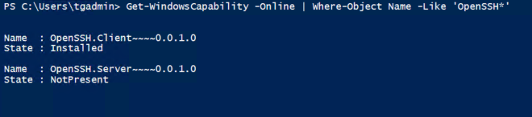

SFTP on windows
Pre-requisite We need windows 2019 server for enabling Openssh server and client features
Step 1
Spin up a windows server 2019 in Azure
Start the Powershell as administrator and run the below command
Get-WindowsCapability -Online | Where-Object Name -Like 'OpenSSH*'

Add-WindowsCapability -Online -Name 'OpenSSH.Server~~~~0.0.1.0'
Step 2
check if the firewall port 22 is allowed. When you run the above command the firewall rule also added automatically

Initial configuration
Start the ssd services
Start-Service sshd
Set the start service type as automatic
Set-Service -Name sshd -StartupType 'Automatic'
Confirm the Firewall rule is configured
Get-NetFirewallRule -Name *ssh*
Try and access using the admin credential ones from any client machine
ssh <admin>@<ip or hostname>

NOTE: if its not working check the firewall rule or NSG rule in cloud
set the user
User has to be local user
New-LocalUser -name bobj_user
This user can be set up with password never expiring also.

Now we will have to give this user access to one specific folder or area when the user sftp into server create a directory in any drive and name it properly
For demo created c:\bobj
configure the sshd_config
We now have to configure the sshd for only sftp on port 22 and allow user access to c:\bobj for the user we have created.
The way we do is to edit the file in the following directory %ProgramData%\ssh\sshd_config
To setup a sftp-only chroot server, set ForceCommand to internal-sftp and match user to direct into only c:\bobj
ForceCommand internal-sftp
Match User bobj_user
ChrootDirectory "c:\bobj"
NOTE: This configuration has to be vetted completely and how it has to be set up. Please refer to the documentation
Lets create a dummy file in the folder C:\bobj
Stop and start the services
Stop-Service sshd
Stop-Service ssh-agent
Start-Service sshd
Start-Service ssh-agent
check via any winscp or filezilla client if it works
We can set up passwordless authentication if required.
This can also be done using the ssh-keygen to generate a pvt and public key and copy the public key in the %USERPROFILE%.ssh\authorized_keys